Beschriftung und 2D-Details
Dieses Kapitel beschreibt Bemaßungen und Abhängigkeiten, Textnotizen, Beschriftungen, Räume und Flächen mit ihren Farbschemata, Legendenansichten und die 2D-Zeichenwerkzeuge: Detaillinien, gefüllte Bereiche, Detailbauteile, wiederholte Details, Dämmung und freie 2D-Ansichten. Beschriftungen gehören zu der Ansicht, in der sie erstellt wurden: Eine Bemaßung, die in einem Grundriss platziert wird, erscheint in keinem anderen Grundriss.
Vor jedem Klick zeigt jedes Werkzeug, was es an der Stelle des Cursors erzeugen würde: die Bemaßung mit ihrem Wert, den Rahmen der Notiz, die Beschriftung am Element unter dem Cursor, den Bereich, den ein Raum oder eine Fläche füllen würde, die Linie, den Bereich, die Komponente oder die Dämmung, die gerade gezeichnet wird.
Bemaßungen
Beschriftungen ▸ Bemaßung enthält die Bemaßungswerkzeuge: Ausgerichtet, Linear, Winkel, Radial, Durchmesser, Bogenlänge und die Punktbemaßungen Höhenkote, Punktkoordinate und Neigungsbemaßung. Sie funktionieren in Grundrissen, Schnitten, Ansichten, freien 2D-Ansichten und Legenden. Wählen Sie den Bemaßungstyp in der Typenauswahl, solange das Werkzeug aktiv ist; Typparameter ändert den Typ und damit jede Bemaßung dieses Typs.
Ausgerichtete und lineare Bemaßungen
Bei Ausgerichtet bietet die Optionsleiste an, welcher Teil einer Wand gewählt wird (Wandachsen, Wandflächen, Tragschichtmitte, Tragschichtflächen) und was ein Klick wählt:
- Referenzen: Klicken Sie die Referenzen nacheinander an (Wandflächen oder Achsen, Raster, Kanten von Türen und Fenstern, Detaillinien, die Kanten von Legendensymbolen) und klicken Sie dann auf eine leere Stelle, um die Bemaßungslinie dort zu platzieren. Während Sie wählen, folgt die Maßkette dem Cursor. Drücken Sie TAB über einer Wand, um ihre Referenzen durchzuschalten.
- Ganze Wände: Ein Klick bemaßt eine ganze Wand. Optionen öffnet die Optionen der automatischen Bemaßung: Öffnungen mit ihren Mitten oder beiden Breiten, Sich schneidende Wände und Sich schneidende Raster; Öffnungen nach Breiten und sich schneidende Wände sind von Anfang an angehakt. Über einer Wand leuchtet sie mit allen Referenzen auf, die der Klick hinzufügt. Klicken Sie die Wand, weitere Wände fügen sich der Maßkette hinzu, dann ein Klick daneben platziert die Linie. An jedem Ende reicht die Kette bis zur dort angeschlossenen Wand (ihre Achse oder Außenfläche, wie die Vorgabe der Optionsleiste sagt). Eine in die Wand eingebettete Vorhangfassade zählt als Öffnung. Ein Raster auf einem Wandende oder auf einer anderen Referenz fügt keine Maßhilfslinie hinzu. Es funktioniert gleich in Grundrissen, Schnitten und Ansichten.
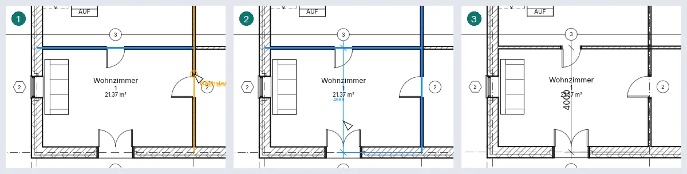
Linear misst entlang der Horizontalen oder der Vertikalen der Ansicht, zwischen Punkten wie Wandenden: Wo Sie die Linie platzieren, entscheidet darüber, und die Leertaste schaltet zwischen beiden um.
Winkel misst den Winkel zwischen zwei Wänden, Rastern oder Linien, die aufeinandertreffen; mehrere Linien durch denselben Punkt ergeben eine Kette von Winkeln, jeder mit seinem Wert; der letzte Klick wählt den Sektor.
Radius-, Durchmesser- und Bogenlängenbemaßungen
Radial, Durchmesser und Bogenlänge bemaßen einen Kreis oder Bogen: einer Detaillinie oder einer gekrümmten Wand. Klicken Sie ihn an und dann dorthin, wo die Bemaßung stehen soll. Bei einer gekrümmten Wand entscheidet Bevorzugt in der Optionsleiste, was zuerst kommt (ihre Achse, ihre Oberflächen, ihr Kern), und TAB wechselt zu den anderen. Eine Durchmesserbemaßung läuft durch den Mittelpunkt, mit einem Pfeil auf der Kurve an jedem Ende und Ø vor dem Wert; außerhalb der Kurve platziert, läuft ihre Linie weiter, um den Wert aufzunehmen. Auf einem Bogen, der kürzer als ein Halbkreis ist, umfasst sie trotzdem den ganzen Durchmesser. Die Bemaßungen folgen dem Bogen, wenn sich sein Radius ändert, und verschwinden, wenn er gelöscht wird. In einem Schnitt oder einer Ansicht werden nur die dort gezeichneten Bögen angeboten.
Eine ausgewählte Radius- oder Durchmesserbemaßung hat einen Griff an ihrem Ende auf der Kurve: Ziehen Sie ihn, um die Linie um den Mittelpunkt zu drehen; auf einem anderen Bogen oder Kreis mit demselben Mittelpunkt losgelassen, misst die Bemaßung diesen. Ihr Wert öffnet Bemaßungstext, und der Griff darunter verschiebt den Text, wie bei ausgerichteten Bemaßungen. Auch die Werte von Winkel- und Bogenlängenbemaßungen öffnen ihn und lassen sich ebenso verschieben.
Eine Bemaßung ändern
- Wählen Sie eine Bemaßung und klicken Sie auf ihren Wert: Bemaßungstext öffnet sich. Tatsächlichen Wert verwenden behält das Maß bei und fügt Text darüber, darunter, davor oder danach hinzu; Durch Text ersetzen zeigt stattdessen Worte (eine Zahl wird abgelehnt).
- Ziehen Sie das blaue Steuerelement unter dem Text, um ihn von der Linie wegzubewegen; nahe an die Linie zurückgezogen, rastet er ein. Weit entfernter Text erhält eine Bogenführungslinie zu seinem Segment; Führungslinie in der Optionsleiste entfernt sie.
- Auswahl: Bemaßungen ▸ Maßhilfslinien ▸ Maßhilfslinien bearbeiten: Klicken Sie Elemente an, um Maßhilfslinien hinzuzufügen, klicken Sie eine vorhandene Maßhilfslinie an, um sie zu entfernen, und klicken Sie dann auf eine leere Stelle, um abzuschließen. Jede Maßhilfslinie einer gewählten Bemaßung hat in ihrer Mitte ein Steuerelement: Klicken Sie mit der rechten Maustaste darauf ▸ Hilfslinie verschieben und klicken Sie dann die neue Referenz an; oder ▸ Hilfslinien löschen. Das Steuerelement am Elementende einer Hilfslinie zieht ihren Abstand vom Element; nahe dem Abstand einer anderen Hilfslinie übernimmt es denselben.
- Wählen Sie ein Element, das die Bemaßung misst, und klicken Sie auf einen Wert daneben: Geben Sie einen neuen Abstand ein und drücken Sie die Eingabetaste, und das Element wird verschoben: eine Wand, ein Raster, eine Tür oder ein Fenster (entlang ihrer Wand) oder eine Detaillinie.
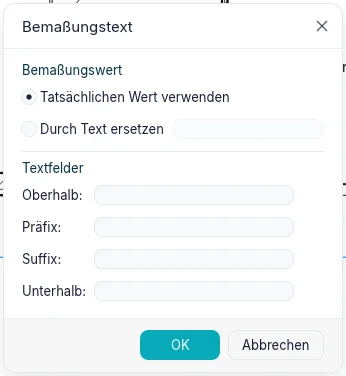
Der Typ legt den Maßpfeil (Schrägstrich, gefüllter Pfeil oder Punkt), die Verlängerungen der Bemaßungs- und Maßhilfslinien (Steuerelement der Hilfslinie: ein Abstand zum Element oder An Maßlinie fixiert mit ihrer Hilfslinienlänge), den Fangabstand der Maßlinie (beim Platzieren oder Ziehen rastet die Linie in Vielfachen davon vom Gemessenen ein und einen Schritt von einer parallelen Maßkette entfernt, sodass sich Ketten gleichmäßig stapeln; eine gestrichelte Linie und ein Hinweis zeigen das Einrasten; 0 schaltet ihn aus), die Linienstärke und die Linienstärke der Markierung, das Mittellinien-Symbol, das Mittellinienmuster und die Mittellinien-Markierung (Standard ist die des Typs) von Maßhilfslinien zu Mittellinien, die Farbe, die Textgröße, den Versatz, den Hintergrund sowie Fett, Kursiv und Unterstrichen fest, ferner die Einheiten (Einheitenformat öffnet Format: Projekteinstellungen verwenden oder eine Einheit mit ihrer Rundung, auch Benutzerdefiniert mit einem Inkrementfaktor, ihrem Symbol und den Optionen) und bei linearen Bemaßungen den Typ Maßkette: Durchgehend, Ausrichtung (übereinandergestapelte Werte ab der ersten Referenz) oder Koordinate (Werte ab der ersten Referenz entlang einer Linie). Öffnungshöhe anzeigen schreibt die Höhe einer Tür oder eines Fensters unter die von Laibung zu Laibung gemessene Breite. Radius- und Durchmessertypen haben ihre Mittelpunktmarkierung (Mittelpunktmarkierungen, mit ihrer Größe) und ihr Symbol: Text Radiussymbol (R) oder Text Durchmessersymbol (Ø), und wo es steht, Vor dem Wert, Nach dem Wert oder Ausgeblendet (Position Radiussymbol, Position Durchmessersymbol). Die Führungslinie verschobenen Textes legt Führungslinientyp fest: Bogen, oder Linie mit ihrer Schulterlänge und der Textposition (Oberhalb: die Schulter läuft unter dem Text; In Linie: sie endet an der Seite des Textes); Führungslinien-Markierung markiert ihr Ende auf der Maßlinie, und Führungslinie anzeigen, wenn Text verschoben wird zeichnet sie, sobald der Text sich bewegt (Entfernt vom Ursprung), oder erst jenseits der Hilfslinien (Jenseits der Hilfslinien). Bei Pfeilen stehen diese außen, wenn ein Segment zu kurz für sie ist, und die Linie läuft um die Verlängerung der umgekehrten Maßlinie darüber hinaus. Beschriftungen ▸ Bemaßung ▸ Bemaßungstypen öffnet die Typparameter des aktuellen Typs jeder Familie, um sie vor dem Bemaßen festzulegen.
Eine gewählte Basislinien-Maßkette zeigt an ihrem Ursprung ein Umkehrsteuerelement: Klicken Sie darauf oder drücken Sie die Leertaste, um vom anderen Ende aus zu messen. Basislinienversatz in ihren Eigenschaften legt den Abstand zwischen ihren Linien auf dem Papier fest.
Ein Koordinatentyp hat in seinen Typparametern Einstellungen für Koordinatenmaße: Bearbeiten… öffnet ein Dialogfeld mit Textausrichtung (an den Hilfslinien Ausgerichtet oder Horizontal), Textposition (In Linie mit der Hilfslinie oder Über der Hilfslinie), Ursprung sichtbar, Ursprungsmarkierung (Nullwert, Kreis oder die Markierung des Typs) und Maßlinienstil (Durchgehend oder Keine, dann bleiben nur die Hilfslinien und ihre Markierungen).
Temporäre Bemaßungen
Wählen Sie ein Element aus, und temporäre Bemaßungen zeigen seine Abstände zu den nächsten parallelen Referenzen: Wände, Raster, Ebenen, Referenzebenen, Geschossdeckenkanten, Raumtrennlinien und Detaillinien. Sie erscheinen für jede Kategorie in jeder Ansicht, in der das Element gezeichnet wird: Grundrisse, Schnitte, Ansichten und 3D-Ansichten, wo sie auf der Ebene des Elements liegen. Eine ausgewählte Ebene zeigt in einem Schnitt oder einer Ansicht ihre Abstände zu den Ebenen darüber und darunter.
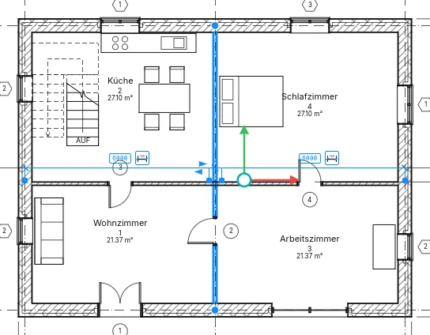
Klicken Sie auf einen Wert, geben Sie einen neuen ein und drücken Sie die Eingabetaste, um das
Element zu verschieben: eine Länge kann eine eigene Einheit haben (2.5 m), und eine Formel
beginnt mit = (=8000/2). Klicken Sie auf das Bemaßungssymbol daneben, um sie dauerhaft zu
machen.
Jede Maßhilfslinie hat einen blauen Griff. Ziehen Sie den Griff an der Referenz auf eine beliebige andere Referenz, um von dort zu messen; oder Rechtsklick ▸ Hilfslinie verschieben, dann auf die neue Referenz klicken. Ein Klick auf einen Griff geht die Referenzen desselben Objekts durch: die Achse einer Wand, ihre Flächen, ihre Kernflächen und ihre Tragschichtmitte. Das Element merkt sich die gewählten Referenzen für jede Ansicht, und sie folgen, wenn sich die Referenz bewegt; Rechtsklick ▸ Referenzen zurücksetzen kehrt zu den nächsten zurück.
Sind mehrere Elemente ausgewählt, wird keine angezeigt, und die Optionsleiste bietet Bemaßungen aktivieren, um sie für alle ausgewählten Elemente anzuzeigen.
Beim Platzieren einer Komponente, einer Tür oder eines Fensters zeigen temporäre Bemaßungen die Abstände zu den nächsten Referenzen; Tab springt zu den nächsten. Lassen Sie den Zeiger kurz ruhen: das Element wartet, während der Zeiger zu einem seiner Werte geht, und ein Klick auf den Wert erlaubt es, den Abstand einzugeben, in dem es platziert wird. Beim Zeichnen werden Länge und Winkel angezeigt; Drehen zeigt den Winkel als Winkelbemaßung, und ein eingegebener Winkel dreht die Auswahl.
Projekt ▸ Weitere Einstellungen ▸ Temporäre Bemaßungen legt fest, wovon Wände messen (Achse, Flächen, Tragschichtmitte, Kernflächen) und Türen und Fenster (Achse oder Öffnungen), für das ganze Projekt. Derselbe Dialog legt den Text aller temporären Bemaßungen für die Anwendung fest: 8 bis 20 pt (anfangs 8), auf transparentem oder undurchsichtigem Hintergrund. Neben den Einstellungen zeigt eine Vorschau drei Wände, bemaßt wie gewählt; der Schalter Vorschau in der Kopfzeile blendet sie aus, der Dialog behält seine Größe, und die Wahl bleibt erhalten.
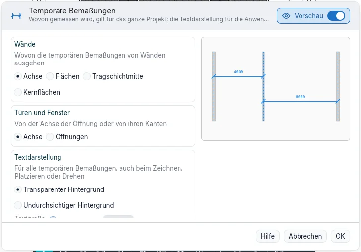
Abhängigkeiten
Wählen Sie eine Bemaßung: An jedem Segment wird ein Vorhängeschloss angezeigt. Klicken Sie darauf, um das Segment zu sperren: Der Abstand bleibt dann erhalten, wenn eines der beiden Elemente bewegt wird, und eine Bewegung, die ihn verletzen würde, wird abgelehnt. Klicken Sie erneut darauf oder klicken Sie mit der rechten Maustaste darauf ▸ Sperre umschalten, um zu entsperren; Rechtsklick ▸ Zugehörige anzeigen wählt die beiden Elemente, die die Sperre verbindet. Eine Kette aus zwei oder mehr Segmenten zeigt EQ: Klicken Sie darauf, und die Referenzen erhalten gleiche Abstände, die auch bleiben, wenn eine davon bewegt wird. Gleichheitsanzeige in den Eigenschaften zeigt die Werte statt EQ.
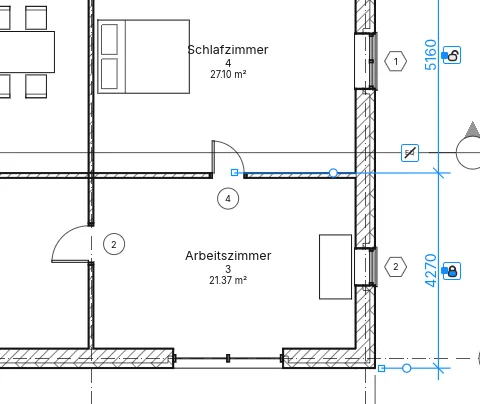
Wählen Sie ein Element, das eine Abhängigkeit hält, so zeigt sie sich als blaue gestrichelte Linien, sofern die Kategorie Abhängigkeiten in Sichtbarkeit und Grafik nicht ausgeblendet ist. Das Löschen einer Bemaßung, die eine Abhängigkeit hält, fragt nach, was geschehen soll: OK löscht die Bemaßung und behält die Abhängigkeit; Elemente löschen löscht beides. Ändern ▸ Ausrichten mit geschlossenem Vorhängeschloss ist ebenfalls eine Abhängigkeit.
Punktbemaßungen
- Höhenkote: Klicken Sie im Grundriss eine Geschossdecke, ein Dach oder die Ebene an; im Schnitt einen beliebigen Punkt. Der Wert steht in Metern mit Vorzeichen.
- Punktkoordinate: die Nord- und Ostkoordinaten eines Punkts im Grundriss.
- Neigungsbemaßung: die Neigung einer Dachfläche im Grundriss oder einer geneigten Linie im Schnitt, mit einem nach unten zeigenden Pfeil.

Die Optionsleiste bietet Führungslinie und, mit Führungslinie, Schulter: Ohne Führungslinie platziert ein Klick die Punktbemaßung; mit Führungslinie klicken Sie den Punkt und dann den Text; mit Schulter den Punkt, den Knick und den Text. Solange Sie darüberfahren, zeigt der Cursor den Wert. Bei Höhenkoten bietet sie außerdem Relative Basis: (für einen Typ, dessen Höhenursprung Relativ ist) und in Grundrissen Höhen anzeigen: an: die tatsächliche Höhe, die Oberkante, die Unterkante oder beide. Bei Neigungsbemaßungen zeichnet Darstellung der Neigung: einen Pfeil oder, in Schnitten, ein Dreieck.
Eine gewählte Punktbemaßung hat Griffe an ihrem Punkt, ihrer Schulter und ihrem Text: Ziehen Sie den Punkt, und die Punktbemaßung misst, was dort ist. Eine Punktbemaßung auf einer Geschossdecke oder einem Dach wird mit ihr gelöscht. Beim Platzieren lässt Esc die halb platzierte Bemaßung los; ein zweites Esc beendet das Werkzeug.
Der Typ der Punktbemaßung legt Höhenkennzeichnung, Oberkanten-Kennzeichnung und Unterkanten-Kennzeichnung (die Ober- oder Unterkanten-Kennzeichnung, dann die Höhenkennzeichnung, dann der Wert; die … als Präfix/Suffix jeder Kennzeichnung setzt sie stattdessen hinter den Wert), das Symbol, Höhe einschließen und die Nord/Süd-Kennzeichnung und Ost/West-Kennzeichnung von Koordinaten (mit Kennzeichnung als Präfix/Suffix) sowie die Länge der Führungslinie und die Neigungsrichtung (Nach unten oder Nach oben) von Neigungen fest.
Die Eigenschaften einer Höhenkote bieten außerdem Präfix Einzel-/Oberwert und Suffix Einzel-/Oberwert sowie für den unteren Wert Präfix Unterwert und Suffix Unterwert: Wörter vor und nach dem Wert.
Pfeile, Schriften und alternative Einheiten
Projekt ▸ Weitere Einstellungen ▸ Pfeile öffnet die Typparameter der Pfeiltypen des Projekts. Jeder hat einen Pfeilstil (Pfeil, Diagonal, Punkt, Verstärkter Strich, Höhenmarke), Gefüllt, Öffnungswinkel, Markengröße auf Papier und, beim verstärkten Strich, eine eigene Linienstärke; was der Stil nicht nutzt, ist grau. Duplizieren… und Umbenennen… funktionieren wie bei anderen Typen; die Vorschau zeigt die Führungslinie einer Notiz und eine Bemaßung mit dem Pfeil. Jeder Führungspfeil (Texte, Beschriftungen, Symbole, Punktbemaßungen) und jede Marke der Bemaßungstypen bietet Keiner und diese Typen an: Ändert man einen Typ, ändert sich jede Zeichnung, die ihn verwendet. Einstellungen aus Projekt kopieren kopiert sie, Nicht verwendete bereinigen entfernt die unbenutzten.
Im Bemaßungstyp formen Textschriftart, Breitenfaktor und Leserichtung (an der Linie ausgerichtet oder waagerecht, auch bei senkrechten Bemaßungen) den Wert; Alternative Einheiten zeigt einen zweiten Wert rechts oder darunter, mit eigenem Format…, Präfix und Suffix. Auf dem Desktop bietet Textschriftart auch die Schriften des Computers an; ein Projekt auf einem Computer ohne diese Schrift wird mit BIMopen Sans gezeichnet, und das Öffnen meldet es. In der Webversion bleiben unsere zwei Schriften. Ein Höhenkotentyp wählt außerdem das Symbol (Keines, Dreieck, Gefülltes Dreieck, Fadenkreuz) und den Führungslinienpfeil mit den Stärken von Linie und Pfeil.
Text
Beschriftungen ▸ Text ▸ Text (TX): Klicken Sie dorthin, wo die Notiz stehen soll, und tippen Sie;
die Eingabetaste beginnt eine neue Zeile. Ein Klick ergibt eine Notiz ohne Umbruch; durch Ziehen
erhält sie eine Breite, und die Wörter werden darin umgebrochen. Ein Klick an anderer Stelle
beendet die Notiz, und Esc beendet das Werkzeug. Tab beim Tippen rückt den
Absatz ein. Die Textgröße gilt auf dem Papier: Die Notiz behält in jedem Ansichtsmaßstab
ihre gedruckte Größe.
Die Gruppe Format legt fest, vor dem Platzieren oder an einer gewählten Notiz:
- die Führungslinie: Keine Führungslinie, Ein Segment (Spitze anklicken, dann die Notiz), Zwei Segmente (Spitze, Knick, Notiz) oder Bogen;
- die Ausrichtung, links, zentriert oder rechts, sowie Fett, Kursiv und Unterstrichen (Strg+B, Strg+I, Strg+U), beim Tippen auf die markierten Zeichen, sonst auf die ganze gewählte Notiz;
- bei einer gewählten Notiz Gerade Führungslinie links hinzufügen und die drei anderen Schaltflächen für Führungslinien Letzte Führungslinie entfernen;
- Anschluss links und Anschluss rechts (Oben, Mittig, Unten): wo die Führungslinien auf die Notiz treffen; beim Platzieren gewählt, bleiben sie für die nächsten Notizen erhalten.
- Absatzformat: die Absätze als Liste, mit Aufzählungszeichen, Nummerierung, Kleinbuchstaben oder Großbuchstaben; der Text jedes Eintrags beginnt am ersten Tabulator, und umgebrochene Zeilen werden um einen eingerückt.
Nahe an der Linie der Ecke einer anderen Notiz rastet eine neue Notiz dort ein, und eine gestrichelte Linie zeigt es an.
Ziehen Sie an einer gewählten Notiz das Kreuz, um den Rahmen zu verschieben (die Spitzen der Führungslinien bleiben), die runden seitlichen Steuerelemente, um ihre Breite zu ändern, und das Drehsteuerelement, um sie zu drehen. Ein Griff in der Mitte jeder Führungslinie erzeugt beim Ziehen einen Knick oder biegt eine gebogene Führungslinie. Doppelklicken Sie darin, um die Wörter zu bearbeiten. Zu ihren Eigenschaften gehören Bogenführungslinien, Anschluss links und Anschluss rechts sowie Lesbar halten, was sie nie auf dem Kopf zeigt. Der Texttyp legt die Farbe (von Text, Rahmen und Führungslinien), den Hintergrund (Undurchsichtig verdeckt, was dahinter liegt), Rahmen anzeigen mit seinem Versatz, die Pfeilspitze der Führungslinie, die Linienstärke von Rahmen und Führungslinien, die Größe, die Tabulatorgröße (12,7 mm) sowie Fett, Kursiv und Unterstrichen fest. Die kleine Schaltfläche Texttypen der Gruppe Text öffnet die Typparameter, wo Duplizieren… einen neuen Texttyp erstellt.
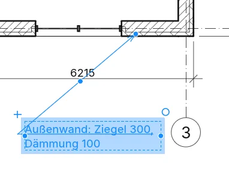
Beschriftungen ▸ Text ▸ Suchen/Ersetzen sucht Wörter in den Notizen der aktuellen Auswahl, der aktuellen Ansicht oder des gesamten Projekts (Bereich:), mit Optionen für Groß- und Kleinschreibung und ganze Wörter. Alle suchen listet die Treffer mit der Ansicht auf, in der sie stehen; Weitersuchen oder ein Klick auf eine Zeile wählt diese Notiz und zeigt ihren gesamten Text unter Kontext. Ersetzen ändert den markierten Treffer (den ersten, wenn keiner markiert ist), Alle ersetzen jeden, und Schließen schließt den Dialog. An gewählten Notizen steht es auch unter Werkzeuge ihrer Registerkarte.
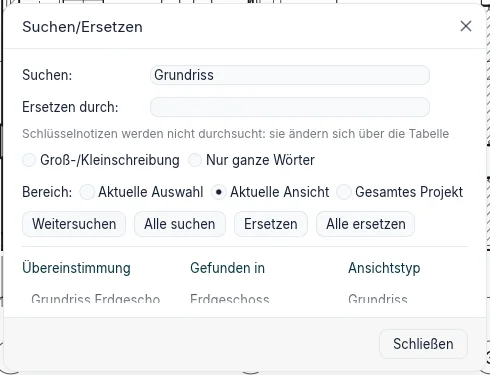
In einer Gruppe zeigt Alle suchen eine Zeile pro Gruppentyp, mit Schloss und Anzahl der Kopien; diese Notizen werden über Gruppe bearbeiten geändert, wo der Bereich Bearbeitete Gruppe heißt und Fertig stellen die Änderung in alle Kopien überträgt.
Beschriftungen ▸ Text ▸ Rechtschreibprüfung (F7) prüft die gewählten Textnotizen, sonst die der
Ansicht oder des Plans (mit den darauf platzierten Ansichten); Beschriftungen, Bemaßungen, Parameter
und Bauteillisten bleiben außen vor, in 3D ist der Befehl grau. Für jedes Wort, das nicht im
Wörterbuch steht, zeigt das Fenster die Notiz mit hervorgehobenem Wort, Ändern in und bis zu
sechs Vorschläge: Ignorieren, Alle ignorieren (bis das Projekt geschlossen wird), Zum
Wörterbuch hinzufügen (das Wörterbuch Persönlich), Ändern und Alle ändern (auch in den
noch zu prüfenden Notizen); ein wiederholtes Wort entfernt Löschen. Die ganze Prüfung ist ein
einziger Rückgängig-Schritt. Notizen in Gruppen werden übersprungen, die Schlussmeldung nennt die
Gruppen; in Gruppe bearbeiten werden nur deren Notizen geprüft. Optionen ▸ Rechtschreibung
enthält die fünf Kästchen (Wörter in Großbuchstaben, mit Zahlen, mit gemischter Schreibung,
Webadressen und Pfade, wiederholte Wörter), Standard wiederherstellen, das Hauptwörterbuch
(Italienisch ist eingebaut, die anderen Sprachen kommen mit den Sprachpaketen) und das Wörterbuch
Persönlich, eine Textdatei mit einem Wort pro Zeile, mit Bearbeiten….
Die Textschriftart des Texttyps ist BIMopen Sans oder die dicktengleiche BIMopen Mono; sein Breitenfaktor zeichnet die Buchstaben schmaler (unter 1) oder breiter, auf dem Bildschirm, im Druck und beim Export.
Textformat und Führungslinien
Beim Schreiben gelten Fett, Kursiv und Unterstrichen (oder Strg+B, Strg+I, Strg+U) für die markierten Zeichen; ohne Markierung für das, was Sie danach schreiben. Ist die Notiz ausgewählt, aber nicht in Bearbeitung, gelten sie für die ganze Notiz. Ist die Markierung nur teilweise formatiert, zeigt die Schaltfläche das mit einem gestrichelten Rand.
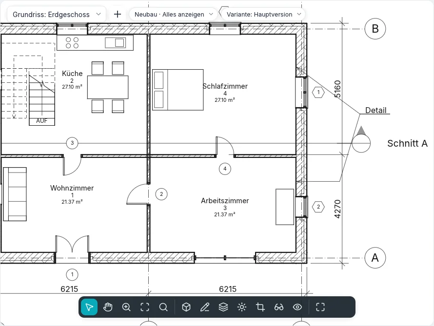
Absatzformat gilt für die Absätze, die die Markierung berührt (oder den Absatz des Cursors), und die Nummerierung beginnt nach einem Absatz ohne Liste neu. Tab rückt den Text des Absatzes um einen Tabstopp ein (das Aufzählungszeichen bleibt), Shift+Tab nimmt den Einzug zurück. Eingefügter Text übernimmt das Format des Absatzes. Beim Schreiben wirken Einfügen, Ausschneiden und Kopieren der Gruppe Zwischenablage auf den Text, am Cursor.
Mit Führungslinie rastet ihr Ende nahe einer anderen Notiz an deren sechs Anschlusspunkten ein (links und rechts, oben, Mitte und unten), mit Markierung und dem Hinweis Notizanschluss; Tab wechselt zum nächsten Punkt. Ohne Führungslinie richtet sich die Notiz an den Ursprüngen der anderen Notizen (links, mittig oder rechts je nach Ausrichtung) und an den Texten der Beschriftungen aus. Mit dem Anschluss Oben oder Unten läuft die Führungslinie unter der ersten oder letzten Zeile weiter; Mitte oder mit Rahmen anzeigen endet sie am Rahmen.
Ein Klick daneben lässt die gerade geschriebene Notiz mit ihren Steuerelementen ausgewählt, und das Werkzeug bleibt aktiv: das erste Esc hebt die Auswahl auf, das zweite beendet das Werkzeug. Hochgestellt und Tiefgestellt verkleinern die gewählten Zeichen und heben oder senken sie; Großbuchstaben zeigt sie in Großbuchstaben, ohne den geschriebenen Text zu ändern.
Symbole
Beschriftungen ▸ Symbol ▸ Symbol (SY) platziert ein 2D-Beschriftungssymbol in einem Grundriss,
einem Schnitt, einer freien 2D-Ansicht oder einer Legende: einen Nordpfeil, ein
Mittellinien-Symbol, einen Flusspfeil, eine Zielmarke oder ein Revisionsdelta, die
letzten beiden mit einem eigenen Text. Das Symbol folgt vor dem Klick dem Cursor; die Leertaste
dreht es um eine Vierteldrehung, oder Drehung in der Optionsleiste legt seinen Winkel fest. Ist
Anzahl der Führungslinien: größer als null, platziert der Klick das Symbol, und die nächsten
Klicks setzen die Enden seiner Führungslinien. Der Typ legt die Größe des Symbols auf dem Papier und
die Pfeilspitze seiner Führungslinien fest; Duplizieren… in Typparameter erstellt einen
neuen.
Beschriftungen
Beschriftungen ▸ Beschriftung ▸ Nach Kategorie beschriften (TG): Fahren Sie über ein Element
(eine Tür, ein Fenster, eine Wand, einen Raum oder eine Fläche) und klicken Sie, um es zu
beschriften. Die Optionsleiste legt Horizontal oder Vertikal, die Führungslinie und
ihre Länge fest; die Leertaste schaltet die Ausrichtung um, beim Platzieren oder an einer
gewählten Beschriftung. Die Tür- und Fensterwerkzeuge haben Beim Platzieren beschriften, sodass
jede neue Tür und jedes neue Fenster seine Beschriftung mitbringt.
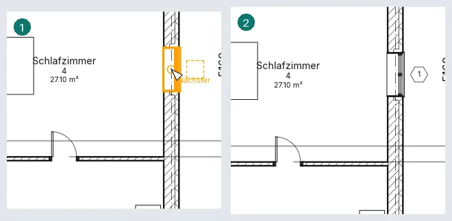
Alle beschriften öffnet Alle beschriften: Haken Sie die Kategorien ab, den Beschriftungstyp jeder Kategorie, die Führungslinie und die Ausrichtung, für alle Elemente der Ansicht oder nur für die gewählten; nur Elemente ohne Beschriftung erhalten eine.
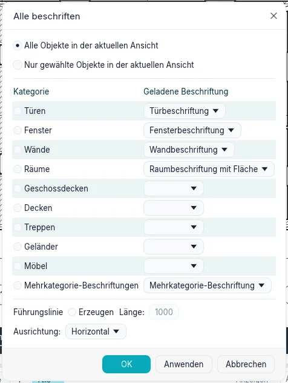
Bei einer Führungslinie endet sie mit Verbundenes Ende am Element; Freies Ende lässt sie dort enden, wo Sie geklickt haben, und eine gewählte Beschriftung zeigt einen Griff, um dieses Ende beliebig zu ziehen (Ende der Führungslinie in den Eigenschaften schaltet zwischen beiden um). Eine Beschriftung richtet sich beim Platzieren oder Ziehen an den anderen Beschriftungen ihrer Art aus: Nahe an der Linie der Mitte einer anderen Beschriftung rastet sie dort ein, und eine gestrichelte Linie zeigt es an. In der Ansicht ausgeblendete Beschriftungen (Sichtbarkeit und Grafik) werden beim Beschriften eingeschaltet, und die Meldung weist darauf hin.
Doppelklicken Sie auf eine Beschriftung, um zu bearbeiten, was sie zeigt: die Kennzeichnung einer Tür oder die Typkennzeichnung einer Wand direkt; Nummer und Name eines Raums oder einer Fläche zusammen in Beschriftungswerte bearbeiten. Eine Beschriftung nimmt über die Typenauswahl einen anderen Typ ihrer eigenen Kategorie an, und Neues Basisbauteil wählen (Gruppe Basisbauteil) verschiebt sie auf ein anderes Element derselben Kategorie. Raumbeschriftungstypen legen fest, ob sie die Nummer, die Fläche und das Volumen zeigen. Eine Raum- oder Flächenbeschriftung mit Muster behält einen Winkel: Sie dreht sich mit Drehen, und die Leertaste richtet sie nacheinander an jeder Wand in ihrer Nähe aus (Drehung in ihren Eigenschaften). Das Löschen der Beschriftung eines Raums lässt den Raum bestehen, und die Meldung weist darauf hin.
Geladene Beschriftungen und Nummerierung
Beschriften ▸ Beschriftung ▸ Geladene Beschriftungen (im BIMopen-Stil der gleichnamige Befehl; in der Optionsleiste von Tür und Fenster die Schaltfläche Geladene Beschriftungen…) listet jede beschriftbare Kategorie mit ihrer Standardbeschriftung. Ein Filter kürzt die Liste; in der Beschriftungsspalte wählt man einen Typ der Kategorie oder, bei Modellkategorien, eine Multikategorie-Beschriftung; Typ bearbeiten… öffnet den Typ der gewählten Zeile. Laden… bleibt vorerst grau. Die Wahl wird im Projekt gespeichert und gilt für Beschriftung, Alle beschriften und Beim Platzieren beschriften, das für Türen und Fenster von Anfang an eingeschaltet ist.
Jede Modellkategorie hat ihre eigene Beschriftung (Böden, Decken, Dächer, Stützen, Treppen, Rampen, Geländer, Paneele und Pfosten, Möbel, Sanitär, allgemeine Modelle), die die Typkennzeichnung zeigt. Die gerade platzierte Beschriftung bleibt ausgewählt, bis die nächste platziert oder ESC gedrückt wird, und das Werkzeug bleibt aktiv.
Türen, Fenster, Räume und die übrigen Elemente werden ab der zuletzt eingegebenen Kennzeichnung nummeriert: ihre letzte Zahl steigt unter Beibehaltung der Nullen (P-09 → P-10), oder ihr letzter Buchstabe (1A → 1B, Z → AA); ein bereits verwendeter Wert wird übersprungen.
Eine ausgewählte Beschriftung zeigt ihre Steuerelemente: das Kreuz über dem Text verschiebt beim Ziehen den Text, die Führungslinie folgt; der Knick in der Mitte der Führungslinie biegt sie (Doppelklick: wieder gerade); das verbundene Ende gleitet am Element entlang. Die Optionsleiste der ausgewählten Beschriftung hat Ausrichtung, Führungslinie und Verbundenes/Freies Ende; ein Klick auf den Text der bereits ausgewählten Beschriftung schreibt ihren Wert. Auch Detailbauteile und Revisionswolken haben ihre Beschriftung (die Wolke zeigt die Revisionsnummer).
Alle beschriften beschriftet nur, was die Ansicht zeigt (ausgeblendete Elemente, ausgeschaltete Kategorien, durch Filter ausgeblendete oder außerhalb des Zuschnitts liegende werden übersprungen und gezählt); mit einer Auswahl beginnt es mit Nur ausgewählte Objekte, jede Zeile zeigt die Anzahl; sind Beschriftungen in der Ansicht ausgeblendet, fragt es zuerst. In Objektstile und Sichtbarkeit/Grafiken hat unter Beschriftungen jede Art (Türen, Fenster, Wände, Räume, Möbel, Multikategorie, Material…) ihre Zeile mit Stärke, Farbe und Muster.
Mehrkategorie-Beschriftungen
Beschriftungen ▸ Beschriftung ▸ Mehrkategorie-Beschriftung beschriftet jedes Modellelement: Wände, Türen, Fenster, Geschossdecken, Decken, Dächer, Stützen, Treppen, Geländer, Möbel, Sanitärobjekte, Fassadenpaneele und allgemeine Modelle (Räume und Flächen haben ihre eigenen Beschriftungen). Sie hat die Optionen von Beschriftung und, platziert, dieselben Eigenschaften; die Leertaste dreht sie. Was sie zeigt, steht im Typ (Typparameter): Beschriftung, Bearbeiten… öffnet Beschriftung bearbeiten, die Felder eines pro Zeile, jedes mit Präfix und Suffix, gewählt aus Kategorie, Typname, Kennzeichen, Typenkennzeichen, Kommentare, Beschreibung, Anzahl Basisbauteile und den Projekt- und gemeinsam genutzten Parametern. Ein leerer Wert oder ein Parameter, den das Element nicht hat, liest sich ?.
Mit einem Filterparameter (einem gemeinsam genutzten Parameter) im Typ werden nur die Elemente hervorgehoben und beschriftet, die diesen Parameter haben. Ein Doppelklick auf eine Zeile der gewählten Beschriftung schreibt ihren Wert: ein Parameter des Elements ändert sich sofort; ein Parameter seines Typs fragt zuerst, denn alle Elemente des Typs ändern sich. Alle beschriften führt auch die Mehrkategorie-Beschriftungen auf: angehakt, erhält jedes Element der Ansicht, das den Filterparameter und keine Beschriftung dieses Typs hat, eine. In einem Schnitt oder einer Ansicht kommt die Beschriftung an die geklickte Stelle, ihre Führungslinie zum Punkt des Elements. Sie folgt dem Element: Bewegt oder ändert sich das Element, wandern die Beschriftung und das Ende ihrer Führungslinie mit, wie im Grundriss; auch dort dreht die Leertaste sie und ein Doppelklick schreibt ihren Wert. Materialbeschriftungen folgen ihrem Element genauso, in Grundrissen und Schnitten.
Materialbeschriftungen
Beschriftungen ▸ Beschriftung ▸ Material beschriftet das Material unter dem Cursor, in einem Grundriss, Schnitt oder einer Ansicht mit Detailgrad Mittel oder Fein: eine Schicht einer Wand, Geschossdecke, eines Dachs oder einer Decke, geschnitten oder gesehen, oder das Material einer Tür, eines Fensters, einer Komponente oder Stütze. Bei Detailgrad Grob werden die Schichten nicht gezeichnet: Sie werden nicht hervorgehoben, und die Statusleiste sagt es. Die Beschriftung zeigt die Beschreibung des Materials; ist sie leer, liest sie sich ?: Doppelklick, tippen, und die Beschreibung des Materials ist ausgefüllt (jede seiner Beschriftungen zeigt sie). Den Griff am Ende der Führungslinie auf eine andere Schicht ziehen, und die Beschriftung liest dieses Material; die Leertaste dreht sie. Verliert das Element später dieses Material (sein Typ ändert sich), liest die Beschriftung ? und die Änderung warnt. Die Beschriftung des Typs wählt, was sie zeigt: Beschreibung, Name, Kommentare, Kennzeichen, Materialklasse, Schlüsselwörter, Hersteller, Modell, Kosten, URL, Schlüsselnotiz oder Anzahl Basisbauteile.
Beschriftungen mit mehreren Führungslinien
Basisbauteil hinzufügen/entfernen in der Optionsleiste von Beschriftung, Mehrkategorie-Beschriftung oder Material einschalten, die Elemente nacheinander anklicken (ein zweiter Klick nimmt eines wieder heraus), dann eine leere Stelle: Dort steht eine einzige Beschriftung mit einer Führungslinie zu jedem Element (Eingabe setzt sie neben das erste). Eine Kategoriebeschriftung nimmt Elemente ihrer Kategorie, eine Materialbeschriftung Stellen desselben Materials. Bei einer gewählten Beschriftung fügt Basisbauteil ▸ Basisbauteil hinzufügen/entfernen Führungslinien hinzu oder entfernt sie bis Ende; Führungslinien ▸ Führungslinien zusammenführen vereint sie in einem Knick vor der Beschriftung, und Anzuzeigende Führungslinien wählen blendet die Führungslinie jedes angeklickten Basisbauteils aus oder ein. Anzahl Basisbauteile in den Eigenschaften sagt, auf wie viele Elemente die Beschriftung zeigt. Das Löschen eines Elements entfernt seine Führungslinie; die Beschriftung bleibt, solange sie auf etwas zeigt.
Mehrere Werte
Unterscheiden sich die Basisbauteile einer Beschriftung (zwei Türen mit verschiedenen Kennzeichen, ein Feld einer Mehrkategorie-Beschriftung), liest sich diese Zeile ‹unterschiedlich›; eine gemeinsame Zeile zeigt ihren Wert, und Anzahl Basisbauteile variiert nie. Ein Doppelklick: Das Feld öffnet sich leer oder mit dem gemeinsamen Wert, und das Getippte geht in einem Schritt an alle Basisbauteile (ein Parameter ihrer Typen fragt zuerst). Eine Raum- oder Flächenbeschriftung mit mehreren Räumen öffnet Beschriftungswerte bearbeiten mit dem Gemeinsamen; geschrieben wird nur, was getippt wird. Projekt ▸ Weitere Einstellungen ▸ Anzeige mehrerer Werte wählt, was solche Zeilen zeigen: ‹unterschiedlich› oder Eigenen Text anzeigen mit einem eigenen Text. Die Palette Eigenschaften mehrerer gewählter Elemente zeigt denselben Text, wo sich ihre Werte unterscheiden.
Schlüsselnotizen
Beschriftungen ▸ Beschriftung ▸ Codierte Notiz hat vier Einträge (der BIMopen-Stil zeigt sie als Kacheln):
- Elementnotiz: das Element anklicken (eine Wand, eine Tür, eine Komponente, eine Detailkomponente… deren Typ eine Schlüsselnotiz hat), dann den Knick der Führungslinie, dann die Stelle der Notiz. Sie liest die Schlüsselnotiz des Typs; ein Typ ohne sie öffnet Schlüsselnotizen.
- Materialnotiz funktioniert wie Material: ein Material anklicken (eine Schicht bei Detailgrad Mittel oder Fein), und die Notiz liest seine Schlüsselnotiz; ihre Führungslinie endet immer auf dem Material.
- Freie Notiz: dieselben drei Klicks; Schlüsselnotizen öffnet sich immer, und der Wert bleibt in der Notiz, das Element ändert sich nicht.
- Optionen für codierte Notizen: siehe unten.
Jede Notiz hat vier Typen: Nummer, Nummer im großen Rahmen, Nummer im kleinen Rahmen und Text (der Text der Notiz aus der Tabelle). Die Optionsleiste hat die Ausrichtung, die Führungslinie und das angehängte oder freie Ende (das der Materialnotiz ist immer frei).
Schlüsselnotizen zeigt die Tabelle als Baum: Schlüsselwert und Text der Schlüsselnotiz, jede Zeile unter ihrem übergeordneten Wert; + und − öffnen und schließen die Zweige, Suchen findet Wörter in Werten und Texten. OK vergibt die gewählte Zeile, Abbrechen lässt den Rahmen leer. Tabelle bearbeiten… bearbeitet die Tabelle des Projekts (Wert, Text, übergeordneter Wert). Bei einer ausgewählten Notiz wählt ein Klick auf ihren Wert, oder auf ihren leeren Rahmen, einen anderen: die Elementnotiz schreibt nach einer Rückfrage die Schlüsselnotiz des Typs (alle Elemente des Typs ändern sich), die freie nur sich selbst, die Materialnotiz das Material. … neben Schlüsselnotiz in den Typparametern und in der Identität eines Materials öffnet denselben Baum.
Optionen für codierte Notizen wählt die Herkunft der Tabelle: Tabelle im Projekt (hier bearbeitet) oder Verknüpfte Datei, eine Textdatei mit einer Zeile pro Notiz — Wert, TAB, Text, TAB, übergeordneter Wert (eine als Text mit Tabulatoren gespeicherte Tabellenkalkulation geht auch). Vollständiger Pfad zeigt, wo die Datei liegt, Gespeicherter Pfad, wie er geschrieben ist, mit Durchsuchen…; der Pfadtyp ist Absolut, Relativ (zum Projektordner) oder In der Bibliothek. Anzeigen… zeigt die Tabelle schreibgeschützt. Beispieltabelle verknüpft die mitgelieferte Tabelle: kurz, auf Italienisch, mit Rohbau, Dämmung, Fenstern und Türen und einem Abschnitt mit Benutzernotizen. Neu laden liest sie sofort neu, und der Dialog warnt, wenn sich die Datei seit dem Lesen geändert hat. Die Datei wird bei jedem Öffnen des Projekts neu gelesen; das Projekt behält eine Kopie, die verwendet wird, wenn die Datei fehlt (es sagt das), und Werte, die die Datei nicht mehr hat, werden aufgelistet. Nummerierungsmethode: Nach Schlüsselnotiz zeigt den Wert; Nach Plan nummeriert die Notizen auf jedem Plan 1, 2, 3… in der Reihenfolge ihrer Erstellung, und eine Ansicht, die auf keinem Plan liegt, zeigt einen leeren Rahmen.
Ansicht ▸ Legenden ▸ Legende der codierten Notizen erstellt eine Bauteilliste, Schlüsselnotiz-Legende, mit Schlüsselnotiz-Wert und Text der Schlüsselnotiz, eine Zeile pro Wert, mit den üblichen Registerkarten der Bauteillisten (ein Filter wie «beginnt mit» auf dem Wert, Sortierung, Formatierung, Darstellung). Nach Plan filtern (in Filter) listet auf jedem Plan nur die Notizen seiner Ansichten; nach Plan nummeriert zeigt sie dieselben Nummern. Suchen/Ersetzen ändert Schlüsselnotizen nie: sie ändern sich über die Tabelle.
Räume
Start ▸ Räume und Flächen ▸ Raum (RM), dann klicken Sie in einen von Wänden oder Raumtrennern
umschlossenen Bereich: Der Raum füllt ihn aus, auch um freistehende Wände herum. In der
Optionsleiste:
- Obere Begrenzung und Versatz: Der Raum reicht bis zu dieser Ebene plus dem Versatz (standardmäßig 4000 mm); eine höhere Ebene ergibt einen Raum über mehrere Geschosse, etwa ein Atrium;
- Beim Platzieren beschriften, standardmäßig ein, mit der Ausrichtung und der Führungslinie der Beschriftung;
- Raum: Neu, oder ein nicht platzierter Raum, um ihn wieder einzusetzen;
- Begrenzungen hervorheben: Wände und Raumtrenner, die Räume begrenzen, werden orange, und die Warnung listet sie auf.
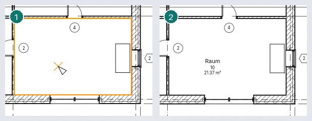
Ein Raum, der im offenen Raum platziert wird, bleibt mit einer Warnung erhalten und nimmt seine Form an, sobald der Raum geschlossen ist; ein zweiter Raum in einem bereits belegten Bereich wird als Redundanter Raum markiert und nicht doppelt gezählt. Vor einer Nummer, die ein anderer Raum bereits hat, einem Raum unterhalb der Berechnungshöhe (1200 mm) und einer Basis darüber wird ebenfalls gewarnt, ebenso vor einem über einen anderen gezeichneten Raumtrenner.
Wände begrenzen die Räume einer Ebene, wenn sie in deren Berechnungshöhe stehen: 1200 mm, solange Automatische Raumberechnungshöhe in den Eigenschaften der Ebene angehakt ist, sonst ihre Berechnungshöhe.
Ein Schnitt zeigt die Räume, die er schneidet, wenn sie gewählt sind oder unter dem Cursor liegen (TAB erreicht einen Raum hinter anderen Elementen). Ein dort gewählter Raum hat oben und an seiner Basis einen Pfeil: Ziehen Sie sie, um seinen Begrenzungsversatz und Versatz unten zu ändern.
Raumtrenner zeichnet Linien, die einen Raum ohne Wände in Räume teilen. Eine Wand begrenzt Räume, solange ihre Eigenschaft Raumbegrenzung ein ist. Darüberliegende Geschossdecken und Dächer begrenzen das Volumen des Raums nach oben.
Das Löschen eines Raums entfernt ihn aus dem Grundriss, behält ihn aber im Projekt, Nicht platziert, mit seinen Daten; seine Beschriftungen verschwinden mit ihm. Das Löschen einer Raumbeschriftung lässt den Raum bestehen. Wird eine Raumbeschriftung aus ihrem Raum gezogen, fragt das Programm, ob sie In Raum verschieben soll.
Räume zeigen sich durch ihre Beschriftungen. In Sichtbarkeit und Grafik hat Räume die Einträge Innenfüllung und Bezug (die Kreuzlinien). Flächen- und Volumenberechnungen öffnet sich auf Berechnung: die Raumbegrenzung an der Wandoberfläche, in der Mitte, an der Tragschicht oder in der Tragschichtmitte, und Flächen und Volumen, um auch Volumen zu berechnen (standardmäßig nur Flächen; das Volumen wird immer bis zur Wandoberfläche gemessen). Die zweite Registerkarte ist Flächenschemata.
Flächen
Flächen gehören zu einem Flächenschema: Bruttogeschossfläche (die nicht gelöscht werden kann) und Vermietbar gehören zu jedem Projekt, und Flächenschemata ▸ Neu fügt weitere hinzu.
- Räume und Flächen ▸ Fläche ▸ Flächenplan: Wählen Sie das Schema und die Ebenen. Antworten Sie Ja, um Flächenumrisse entlang der Außenwände zu zeichnen, Nein, um sie selbst zu zeichnen.
- Fläche ▸ Flächenumriss: Zeichnen Sie die Begrenzungen oder wählen Sie Wände; bei eingeschalteten Flächenregeln ergibt eine Außenwand eines Bruttoplans ihre Außenfläche.
- Fläche ▸ Fläche: Klicken Sie innerhalb der Begrenzungen. Die Fläche wird beim Platzieren beschriftet; Beschriftung ▸ Flächenbeschriftung beschriftet sie später. Wird die Fläche dort platziert, wo keine Begrenzungen einen Bereich schließen, bleibt sie mit einer Warnung erhalten und nimmt ihre Form an, sobald sie es tun; eine zweite Fläche in einem Bereich ist eine Redundante Fläche.
Das Löschen einer Fläche lässt sie im Projekt, nicht platziert und ohne ihre Beschriftungen; Fläche: in der Optionsleiste des Werkzeugs Fläche listet die nicht platzierten Flächen auf, um eine mit einem Klick wieder einzusetzen.
Farbschemata
Ein Farbschema füllt die Räume oder Flächen eines Grundrisses (und die Räume, die ein Schnitt schneidet) nach einem Wert (Name, Nummer, Abteilung, Flächenart) oder nach Flächenbereichen. Legen Sie es in der Eigenschaft Farbschema des Grundrisses fest; (keine) schaltet es aus. Farbschemata (Farbschema bearbeiten) erstellt und dupliziert Schemata und bearbeitet den Titel, den Parameter, die Werte mit ihrer Farbe und Sichtbarkeit, ihre Reihenfolge und die Bereiche. Anwenden behält die Änderungen und legt das Schema der Ansicht fest, bei der der Dialog geöffnet wurde. Position des Farbschemas, eine Ansichtseigenschaft, zeichnet die Füllungen im Hintergrund (unter dem Modell) oder im Vordergrund (über dem Modell, unter den Beschriftungen).
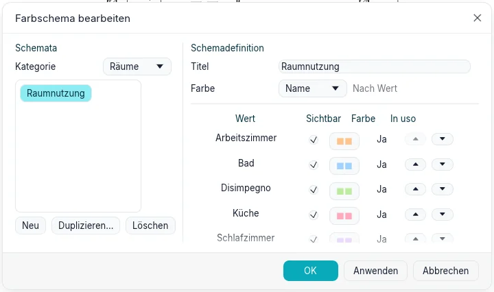
Räume und Flächen ▸ Legende platziert die Legende des Schemas des Grundrisses: ein Farbfeld und eine Bezeichnung für jeden Wert. Ihre Angezeigte Werte sind Nach Ansicht (die im Grundriss) oder Alle, und Spalten verteilt die Farbfelder auf mehrere Spalten. Ein Grundriss kann mehrere Legenden haben; das Löschen einer Legende lässt das Schema bestehen.
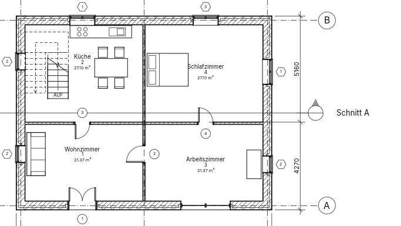
Legendenansichten
Ansichten ▸ Legenden ▸ Legende öffnet Neue Legendenansicht: einen Namen und einen Maßstab. Die Legende öffnet sich und wird im Projektindex unter Legenden aufgeführt. Beschriftungen ▸ Bauteil ▸ Legendenbauteil platziert das Symbol eines Typs: in der Optionsleiste den Typ, die Ansicht, aus der es gesehen wird (eine Wand im Grundriss oder Schnitt; eine Geschossdecke oder ein Dach im Schnitt oder Grundriss; eine Tür, ein Fenster oder ein Bauteil im Grundriss, von vorn oder von hinten) und die Länge Basisbauteil, das Wandstück, in dem eine Tür oder ein Fenster sitzt. Legendenbauteile werden mit dem Detail der Legende gezeichnet, können verschoben und bemaßt werden (die Kanten von Türen, Fenstern und Bauteilen; Wände, Geschossdecken und Dächer nicht) und werden von Tabellen nicht gezählt. Text, Detaillinien und gefüllte Bereiche funktionieren wie in einer freien 2D-Ansicht. Eine Legende kann auf mehreren Plänen platziert werden.
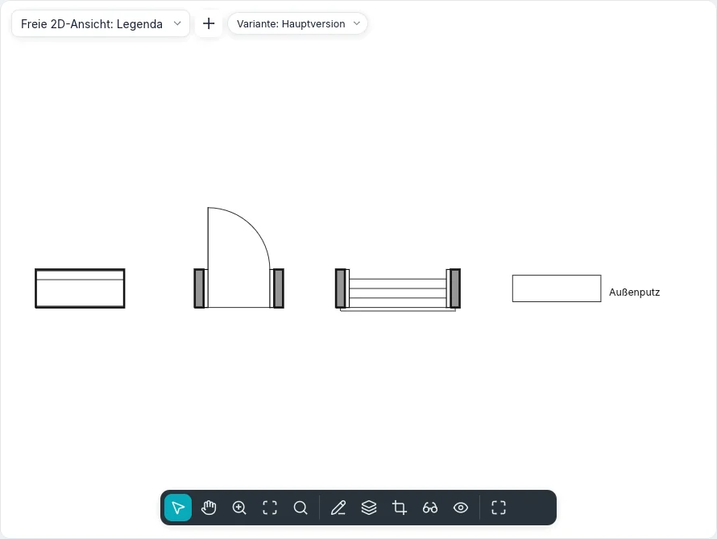
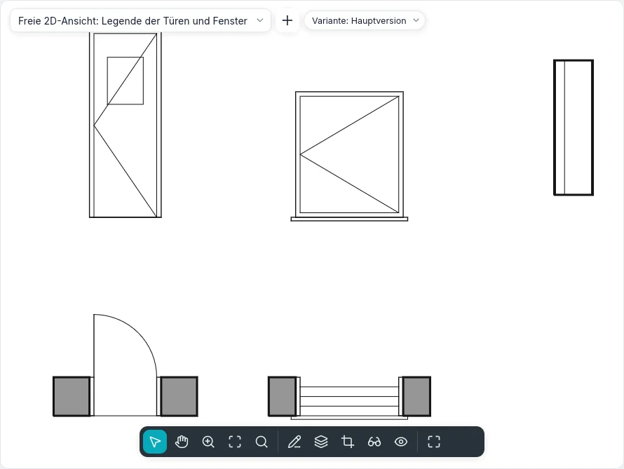
Bauteil listet auch Unterdecken, Treppen, Geländer und Stützen sowie zwei Arten verknüpfter Muster: Materialien: … zeichnet ein Muster des Schnitt- oder Oberflächenmusters des Materials, ein Muster breit × hoch, und Linienstile: … zeichnet eine Linie so lang wie Länge; Mit Name schreibt den Namen daneben. Ein Muster folgt dem, was es zeigt: Ändern sich Muster oder Name des Materials oder Stärke, Farbe oder Muster des Linienstils, folgt die Legende. In Sichtbarkeit/Grafiken der Legende haben Türen (Rahmen, Türblatt, Öffnungslinien, Glas, Schwelle), Fenster (Rahmen, Glas, Fensterbank, Öffnungslinien), Treppen (Auftritte, Steigungen, Lauflinie) und Geländer (Handlauf, Stäbe) ihre Unterkategorien, einzeln schaltbar: Eine Legende nur mit Rahmen ist eine Türlegende mit den anderen Zeilen aus. Die Farbfüllungslegende (Räume und Flächen ▸ Legende) gehört auch in einen Schnitt oder eine Ansicht mit einem Farbschema.
Ein Typ, der aus Bauteile im Projektindex in eine Legende gezogen wird, wird dort, wo er abgelegt wird, zu ihrem Legendenbauteil; ein Typ aus Bauteile ▸ Symbole platziert dieses Beschriftungssymbol. Gleiches erstellen im Kontextmenü eines gewählten Elements startet das Werkzeug, das es mit seinem Typ platziert: bei einem Legendenbauteil auch mit seiner Ansicht und der Länge Basisbauteil.
Detaillinien und Bereiche
Beschriftungen ▸ Detail ▸ Detaillinie (DL) zeichnet Linien nur in der geöffneten Ansicht, im
Linienstil der Gruppe Linienstil. Die Gruppe Zeichnen bietet Linie, Rechteck,
Einbeschriebenes Polygon, Umschriebenes Polygon, Kreis, Bogen Start-Ende-Radius,
Bogen mit Mittelpunkt und Endpunkten, Tangentialer Bogen, Spline, Ellipse,
Teilellipse und Abrundungsbogen. Die Optionsleiste zeigt, was die Form annimmt:
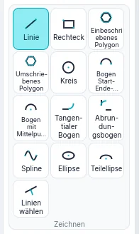
| Option | Was sie bewirkt |
|---|---|
| Fortsetzen | Jede Linie (oder jeder Bogen oder Spline) beginnt dort, wo die letzte endete; ausgeschaltet steht jede für sich |
| Versatz | Das Gezeichnete wird um diesen Betrag seitlich verschoben; verkettete Linien treffen sich an ihren Ecken |
| Radius | Ein Kreis, ein Polygon oder ein Bogen mit Mittelpunkt und Endpunkten mit diesem Radius (ein Kreis braucht einen Klick); verkettete Linien und Rechtecke erhalten abgerundete Ecken. Versatz wird dann ignoriert |
| Seiten | Die Anzahl der Seiten eines Polygons |
Nach dem ersten Klick tippen Sie eine Länge (eine Linie, eine Sehne) oder einen Radius (Kreise, Polygone, Bögen, Ellipsenachsen) und drücken Enter; der Wert steht am Cursor. Ein Bogen mit Mittelpunkt und Endpunkten überschreitet nie 180°: Darüber hinaus dreht er sich in die andere Richtung, und ein getippter Winkel legt sein Ende fest. Ein tangentialer Bogen beginnt am Ende einer Linie oder eines Bogens, den Sie anklicken. Shift hält Linien und Polygonradien waagerecht oder senkrecht, dreht Sehnen, Bogenradien und Ellipsenachsen in Schritten von 45° und hält den Öffnungswinkel eines Bogens bei 90°, 180° oder 270°. Esc beendet eine Kette oder einen Spline. Dieselben Formen und Optionen gibt es in jeder Skizze (Geschossdecken, Dächer, Bereiche, Revisionswolken, Wandprofile).
Linien wählen erzeugt eine Detaillinie auf der Fläche, der Achse oder der Schicht einer Wand, an einem Raster oder einer anderen Linie unter dem Cursor (Tab für die nächste), verschoben um den Versatz; mit Sperren bleibt die Linie daran und folgt, wenn es sich bewegt. Abrundungsbogen wählt zwei Linien und rundet ihre Ecke ab, mit dem Bogen unter dem Cursor oder mit dem eingestellten Radius. Eine gewählte Detaillinie hat Griffe an ihren Enden und eine temporäre Bemaßung ihrer Länge: Tippen Sie einen Wert, um sie zu ändern. Der Cursor rastet an Endpunkten, Mitten, Mittelpunkten und Schnittpunkten der Detaillinien der Ansicht ein. Das Ende einer allein gewählten Linie wird allein gezogen und lässt die Nachbarlinie, wo sie ist; ist eine Kette gewählt (Tab), werden die Enden, an denen ihre Linien zusammentreffen, gemeinsam gezogen, in einem einzigen Rückgängig-Schritt.
Ein Spline kann sich nicht selbst schließen: Ein Klick auf seinen ersten Punkt wird abgelehnt, und ein zweiter Spline schließt die Begrenzung. Ein gewählter Spline hat an jedem Kontrollpunkt einen Griff: Ziehen Sie einen in der Mitte, um die Kurve zu formen; ziehen Sie ein Ende, um den ganzen Spline zu verschieben, oder drücken Sie zuerst Tab auf dem Ende, um nur dieses zu verschieben. Spline bearbeiten ▸ Kontrollpunkt hinzufügen setzt einen Kontrollpunkt in die Mitte der angeklickten Sehne (darüber zeigt die Statusleiste Referenz), Kontrollpunkt löschen entfernt den angeklickten; Esc beendet beide. Eine gewählte Ellipse zeigt ihre beiden Radien als temporäre Bemaßungen (tippen Sie einen Wert, um einen zu ändern) und an jedem Quadranten einen Griff: Wer einen zieht, ändert diese Achse und dreht die Ellipse zum Cursor. Mit Bearbeitung behält Proportionen bei in der Optionsleiste ändern sich beide Radien zusammen. Eine Teilellipse hat außerdem an jedem Ende einen Griff: Ende ziehen ändert, wie weit sie herumreicht, Tab wechselt zu Achsenende ziehen, das dieses Ende der Achse verschiebt, während das andere bleibt. Linien wählen auf einem Bogen, Kreis, einer Ellipse oder einem Spline kopiert ihn; mit Versatz ergeben eine Ellipse oder ein Spline Splines.
Der dritte Punkt eines Bogens Start-Ende-Radius rastet ein, wenn der Bogen tangential zur Linie oder zum Bogen wird, die an seinem Anfang oder Ende enden: das Tangentenzeichen erscheint, und die Statusleiste zeigt Tangente. Eine vom Ende eines Bogens gezeichnete Linie rastet ebenso tangential daran ein. Ein gewählter Bogen hat an jedem Ende einen Griff, der seinen Öffnungswinkel ändert, und einen in der Mitte: mit Konzentrisch bleiben in der Optionsleiste ändert sich der Radius um denselben Mittelpunkt, sonst bleiben die Enden, wo sie sind. Dasselbe gilt in Grundrissen, Schnitten, Ansichten und in 3D.
Gefüllter Bereich ▸ Gefüllter Bereich öffnet den Skizziermodus: Die Begrenzung wird mit jeder Form der Gruppe Zeichnen und mit Linien wählen skizziert, und Schleifen innerhalb einer anderen sind Löcher. Ein Spline oder eine Ellipse bleibt eine Kurve der Skizze, mit ihren Griffen; die Kontur des Bereichs besteht aus ihren kurzen Stücken. Esc beendet eine Kette und behält die Skizze; Ändern und die Werkzeuge von Ändern wirken auf ihre Linien. Bearbeitungsmodus beenden erzeugt den Bereich im aktuellen Bereichstyp oder nennt den Grund, warum es nicht geht (eine offene oder sich kreuzende Begrenzung). Begrenzung bearbeiten eines gewählten Bereichs öffnet seine Skizze erneut. Der Typ legt sein Füllmuster, seine Farbe und seinen Hintergrund fest (Undurchsichtig verdeckt, was dahinter liegt). Gefüllter Bereich ▸ Maskierungsbereich erzeugt einen Bereich in der Papierfarbe, der verdeckt, was darunter liegt. Ein Bereich zeigt seine Fläche und hat Kommentare. Ein gewählter Bereich hat an jedem Eckpunkt einen Griff: Ziehen Sie einen, um seine Form zu ändern.
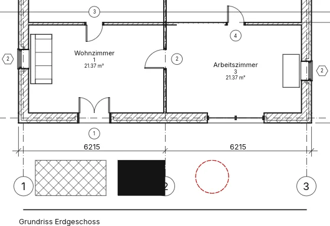
Das Tangentenschloss
Wählen Sie eine Linie (Skizzen-, Detail- oder 3D-Linie), die eine andere Ende an Ende mit gleicher Richtung trifft: neben der Verbindung erscheint ein offenes Schloss, außerhalb der Biegung (keines zwischen zwei Geraden). Beim Überfahren werden beide Linien hervorgehoben; ein Klick sperrt die Tangente, ein weiterer entsperrt sie. Gesperrt bleiben die Linien tangential, wenn eine geändert wird: eine Gerade, die sich dreht, lässt den Bogen durch sein fernes Ende neu anpassen; ein Bogen zwischen zwei Geraden behält seinen Radius und gleitet auf ihnen; eine Ellipse dreht sich um ihr fernes Ende; der zweite Kontrollpunkt einer Spline folgt der Richtung. Eine Änderung, die sie nicht halten kann, fragt Abhängigkeit nicht eingehalten: Abhängigkeit entfernen entsperrt und führt sie aus, Abbrechen bricht ab. Rechtsklick auf das Schloss bietet Sperre umschalten und Zugehörige anzeigen. Im BIMopen-Stil hat die Befehlssuche auch Tangenten sperren und Tangenten entsperren.
Detailbauteile, wiederholte Details und Dämmung
- Bauteil ▸ Detailbauteil: ein 2D-Symbol (Ziegel, Block, Holz, Stahlprofil, Dämmplatte, Unterbrechungslinie), das in einer Zeichen- oder Detailansicht platziert wird; die Leertaste richtet es nacheinander an jeder Wand oder Detaillinie nahe am Cursor aus (eine Vierteldrehung, wenn keine da ist).
- Bauteil ▸ Wiederholtes Detail: Klicken Sie einen Anfang und ein Ende an; der Typ legt das wiederholte Bauteil, das Layout (verfügbaren Platz füllen, fester Abstand, feste Anzahl, maximaler Abstand), den Abstand, Innen und die Drehung innerhalb des Musters fest. Die Instanz hat die Nummer, wenn das Layout eine feste Anzahl ist.
- Dämmung: Klicken Sie zwei Punkte an; Breite und Versatz (die Dämmung verläuft so weit links von den Klicks) in der Optionsleiste; mit angehaktem Linien wählen zeichnet ein Klick auf eine Detaillinie oder eine Wand die Dämmung entlang dieser Linie. Die Dämmungsbreite und das Wölbungsverhältnis in den Eigenschaften. Eine gewählte Dämmung und ein gewähltes wiederholtes Detail haben an jedem Ende einen Griff.
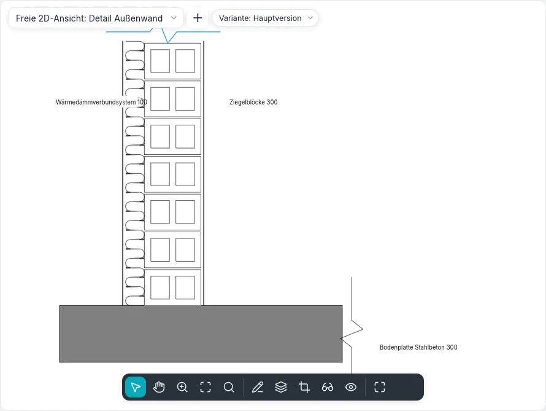
In Füllmuster zeichnet die Linienstärke eines Musters seine Linien mit einer der Linienstärken des Projekts; auf (dünn) bleiben es Haarlinien.
Zeichenreihenfolge
Wählen Sie nur Detailelemente: Anordnen bietet In den Vordergrund, Eine Ebene nach vorne, In den Hintergrund und Eine Ebene nach hinten. Detailelemente werden immer über dem Modell gezeichnet, und ein neues kommt nach oben. Rückgängig stellt die vorherige Reihenfolge wieder her.
Freie 2D-Ansichten
Ansichten ▸ Erzeugen ▸ Freie 2D-Ansicht fragt nach einem Namen und einem Maßstab (oder einem benutzerdefinierten). Die Ansicht öffnet sich und wird unter Freie 2D-Ansichten aufgeführt; alles, was darin gezeichnet wird, ist 2D, ohne Modell dahinter. Sie kann auf einem Plan platziert werden. Ansicht duplizieren ▸ Mit Detaillierung duplizieren kopiert eine Ansicht mit ihren Detailelementen, Texten, Bemaßungen und Legendenbauteilen.
In neuer Datei speichern… im Menü einer freien 2D-Ansicht im Index schreibt ein Projekt mit der Ansicht, ihren 2D-Elementen und den verwendeten Typen. Einfügen ▸ Ansichten aus Datei einfügen… listet die freien 2D-Ansichten und Bauteillisten der Datei zum Ankreuzen; 2D-Elemente aus Datei einfügen… kopiert die 2D-Elemente einer ihrer Ansichten in die aktive Ansicht (frei 2D, Grundriss oder Schnitt): sie folgen dem Cursor, ein Klick setzt sie ab, ausgewählt. Typen mit gleichem Namen bleiben die des Projekts und werden aufgelistet.
Typ im Dialog und in der Typenauswahl wählt einen der zwei mitgelieferten Typen, Detail und Schema; weitere entstehen mit Duplizieren… in Typparameter, wo Schnittbeschriftung, Detailbeschriftung, Verweistext (neben dem Kopf eines Details geschrieben, das auf die Ansicht verweist, z. B. «Sim.») und Vorlage für neue Ansichten eingestellt werden. Grafikstil ist Verdeckte Linien (schraffierte Bereiche verdecken, was darunter liegt) oder Drahtmodell (alles bleibt sichtbar). Eine hier gezeichnete Referenzebene gehört nur zu dieser Ansicht und ist keine Arbeitsebene.
In einem Detail mit Auf andere Ansicht verweisen erstellt der erste Eintrag
Modell anzeigen in den Eigenschaften eines Grundrisses, eines Schnitts oder einer Detailansicht zeichnet das Modell Normal, Halbton (grau unter den Details) oder gar nicht (Nicht anzeigen), sodass die Details und Beschriftungen bleiben.
Ansichten ▸ Erzeugen ▸ Detail mit angehaktem Auf andere Ansicht verweisen in der Optionsleiste zeichnet einen Ausschnitt, der auf eine vorhandene Detailansicht oder freie 2D-Ansicht verweist, statt eine neue zu erzeugen: Sein Kopf nennt diese Ansicht, und ein Doppelklick öffnet sie; Referenzierte Ansicht in seinen Eigenschaften ändert sie. In einer freien 2D-Ansicht ist der Ausschnitt immer von dieser Art.
Ausblenden bei Maßstäben gröber als in den Eigenschaften eines Schnitts oder eines Ausschnitts blendet sein Symbol in den Ansichten aus, deren Maßstab gröber ist, zum Beispiel ein Detail 1 : 50 im Grundriss 1 : 100.
In der Befehlszeile
Jedes Werkzeug hat seinen Befehl: dim, lineardim, angulardim, radialdim, diamdim, arcdim,
spotelevation, text, findreplace, tag, room, roomsep, areaplan, areaboundary,
area, colorscheme, legend, legendview, legendcomponent, detailline, region, mask,
draworder, lock, eq. help gefolgt von einem Befehl zeigt seine Verwendung; Tastenkürzel
listet die getippten Kürzel auf.